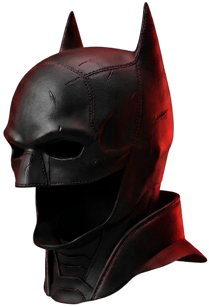

Em uma Gotham City dominada pelo medo e pela corrupção, Batman investiga uma sequência de assassinatos deixados pelo misterioso Charada, um criminoso que desafia as autoridades com enigmas e segredos sombrios da elite da cidade. À medida que a investigação se aprofunda, Bruce Wayne descobre conexões perigosas entre sua própria família e o submundo de Gotham, enquanto tenta entender qual símbolo deseja se tornar para a cidade. The Batman mistura suspense policial, ação e tensão psicológica em uma abordagem mais sombria e investigativa do herói.